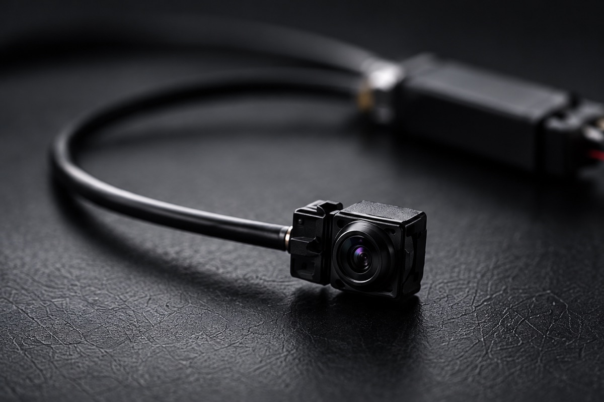

Diskret. Gezielt. Zeitlich begrenzt.
Verdeckte Videoüberwachung
Mini-Kameras zur Aufklärung konkreter Verdachtsfälle – für Groß- und Einzelhandel, Gewerbe und private Anliegen.
Wir planen und installieren die passende Technik für einen klar definierten Zweck und Zeitraum. Ihr Anliegen besprechen wir persönlich und vertraulich.
Vertraulich anfragen
KI-generiert-
Konkreter Verdacht
Gezielter Einsatz bei Verdacht auf Diebstahl, Sachbeschädigung oder andere Straftaten.
-
Begrenzter Zeitraum
Aufzeichnung für den abgestimmten Zweck und Einsatzzeitraum.
-
Diskrete Umsetzung
Unauffällige Mini-Kameratechnik, passend zur Umgebung installiert.